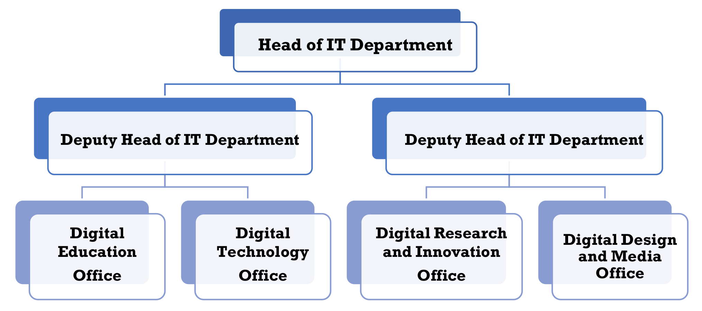

KCA University - Department of Technology and Analytics offers varieties of courses


We are a leading institution in technology and analytics education, dedicated to providing quality education and fostering innovation. Our programs are designed to equip students with the skills and knowledge needed to excel in the rapidly evolving tech and analytics fields.
Explore our courses, learn about our faculty, and discover the opportunities that await you at KCA University.
For more information, please visit our official website or contact our admissions office.
>Our programs are designed to meet the demands of a rapidly changing world, blending academic excellence with real-world experience. From cutting-edge research labs to collaborative learning spaces, we provide the tools and guidance you need to turn ideas into impact. Here, you’ll connect with industry leaders, engage in meaningful projects, and gain skills that prepare you for a future full of possibilities.
The IT department structure typically includes various roles and responsibilities that align technology with business goals
